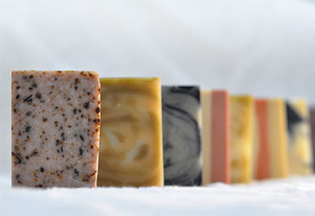

- 慶祝分店新開幕，全店商品8折起。
- 適合秋冬的手工皂已接近熟成，即日起開放預購，請見商品預購詳細說明。
- 店舖資訊已更新。
- 體驗課程的活動展開了。詳情請見News
- 下半年度最新課程表，名額有限，報名請早，以免向隅。
手工皂
富含甘油的手工皂，在清潔的同時對皮膚產生保濕滋潤的效果，洗後乾淨不黏膩，皮膚觸感柔滑，不緊繃乾燥，呈現油水平衡的最佳膚質。
草本精油

堅持純天然原料，經過蒸餾或壓榨萃取出的精華，不添加礦物油、不添加人工色素、不添加香料，感受最自然、最純粹的精油！
手作課程

想一窺手工皂的製作過程嗎？想親手作出最適合自己使用的手工皂嗎？從最適合入門的冷凝皂到各式保養功效手工皂及變化萬千的藝術皂，歡迎團體自行組班預約。
服務項目
NatureCare堅持提供最天然的手工皂及精油產品，並提供手工皂代製服務，歡迎個人及企業預約代製。我們也提供線上諮詢，歡迎多加利用